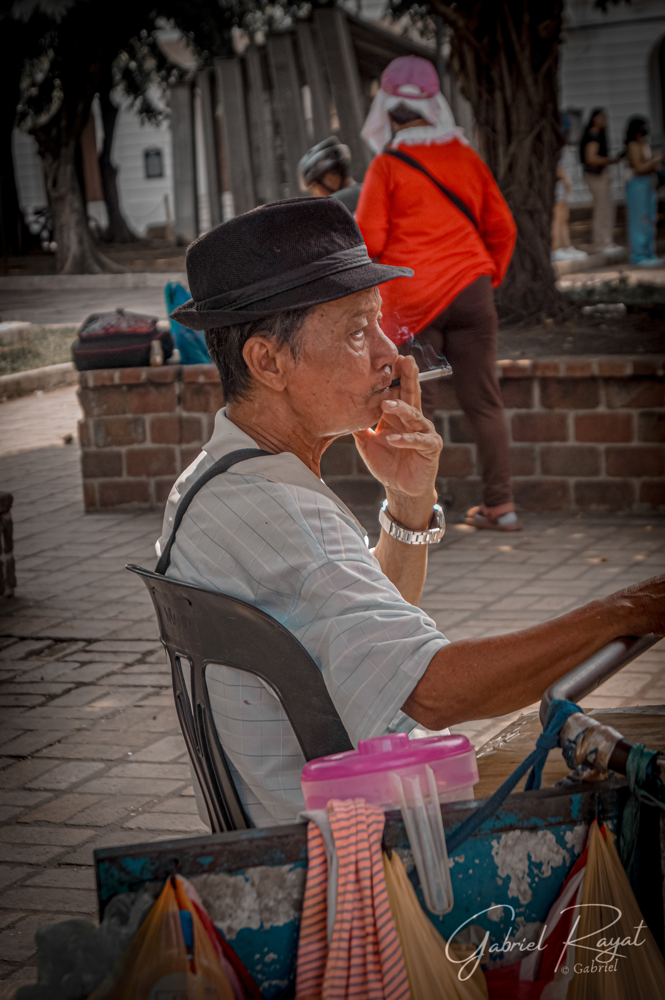
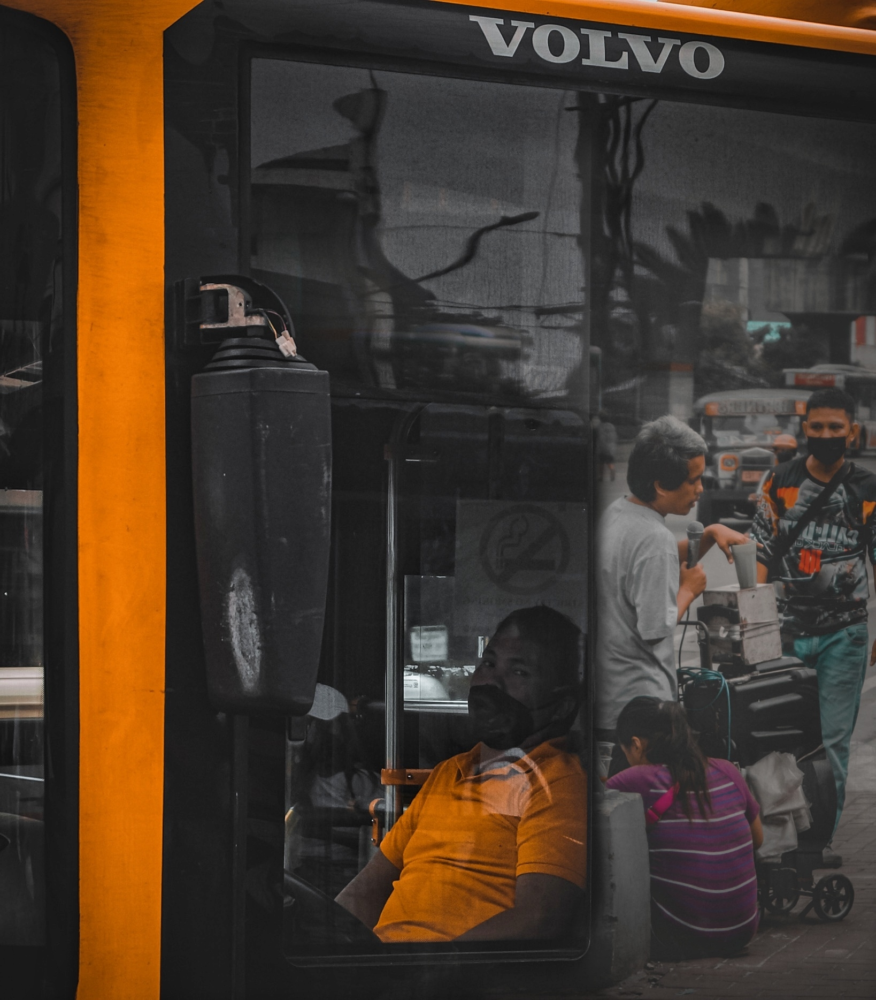
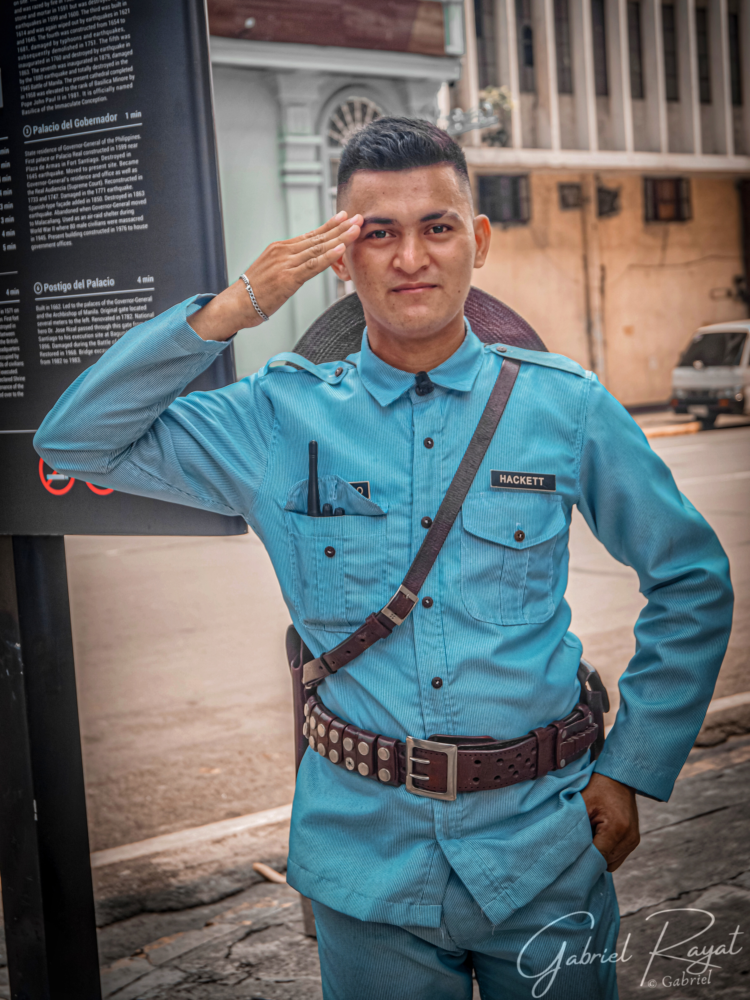
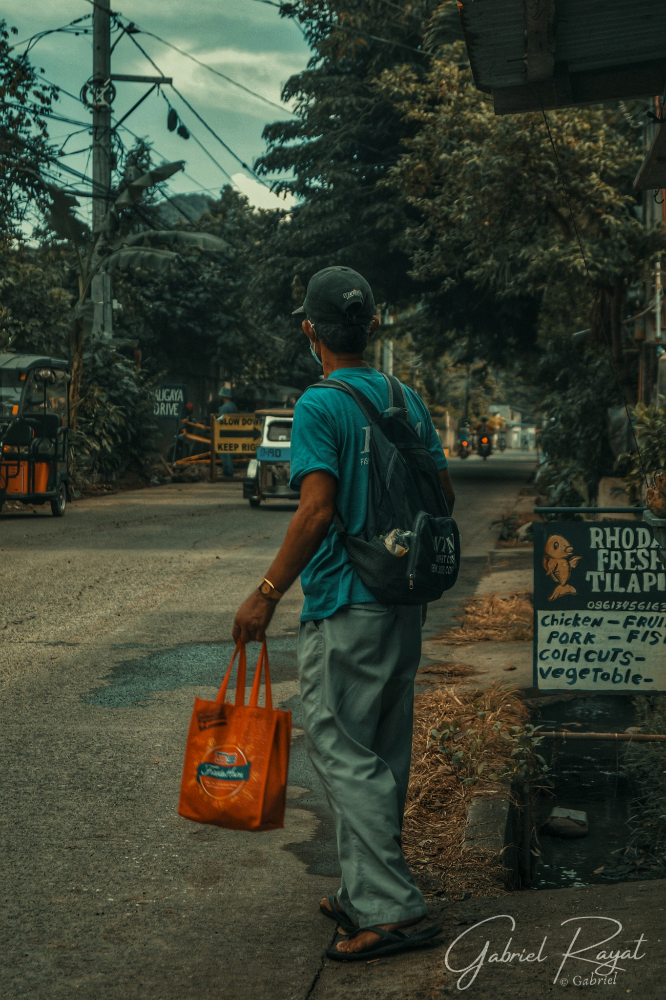
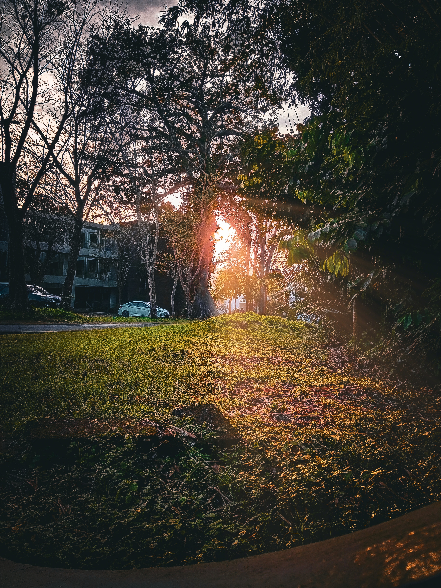
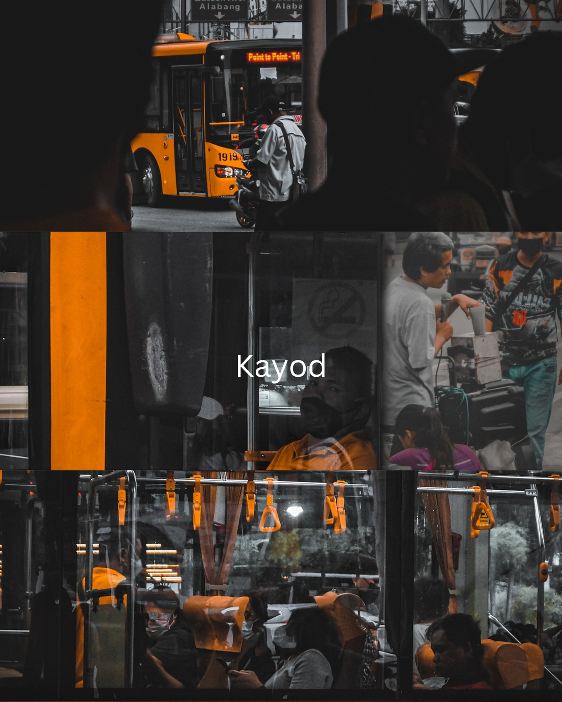
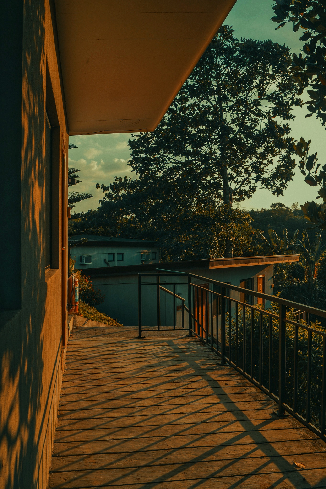
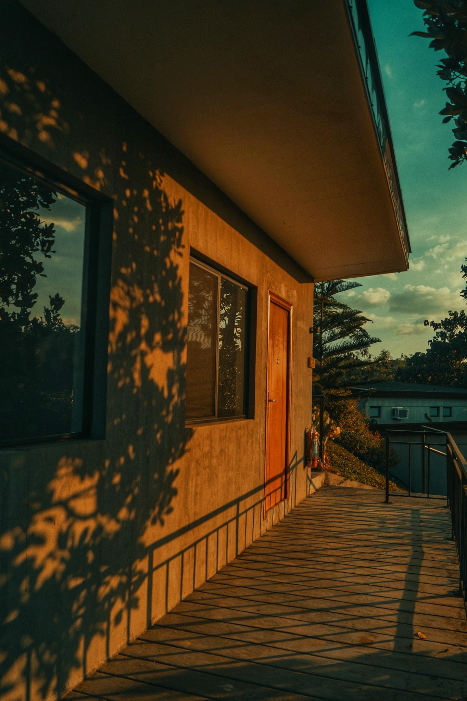
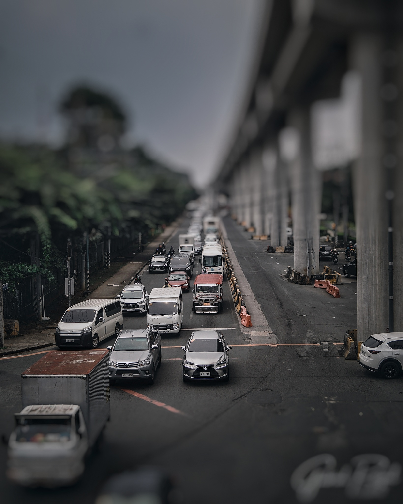
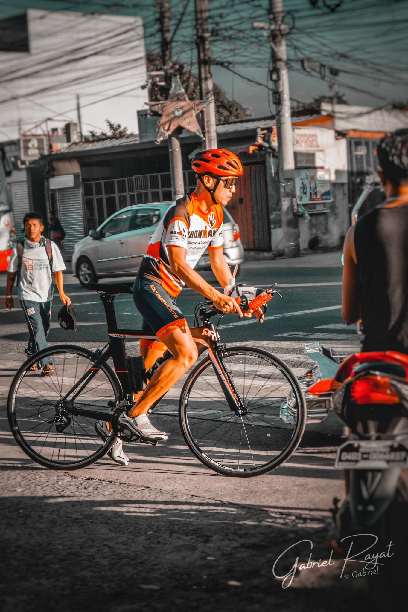
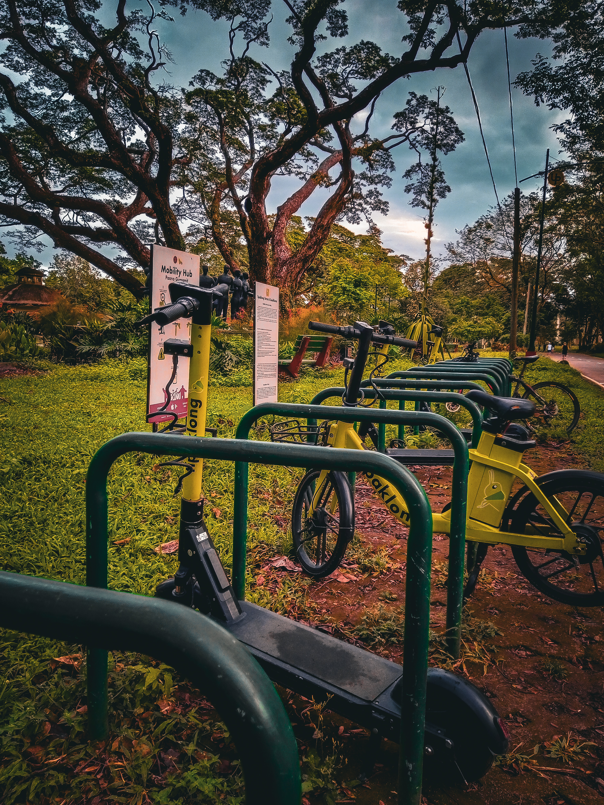
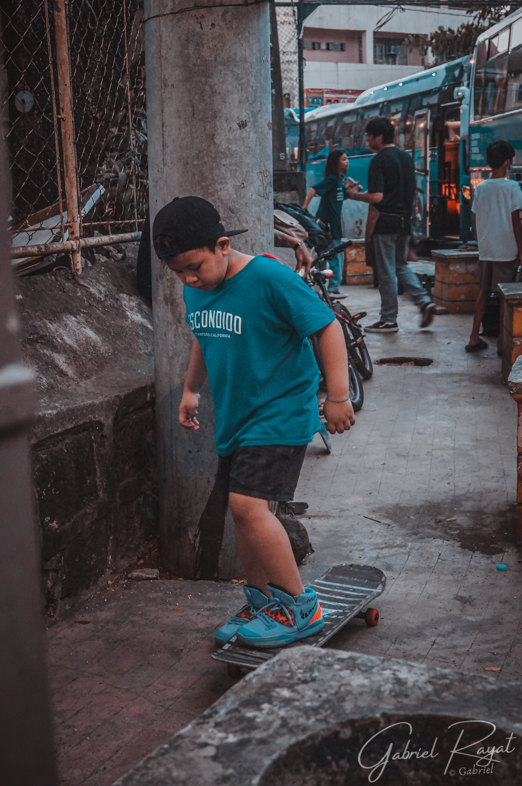
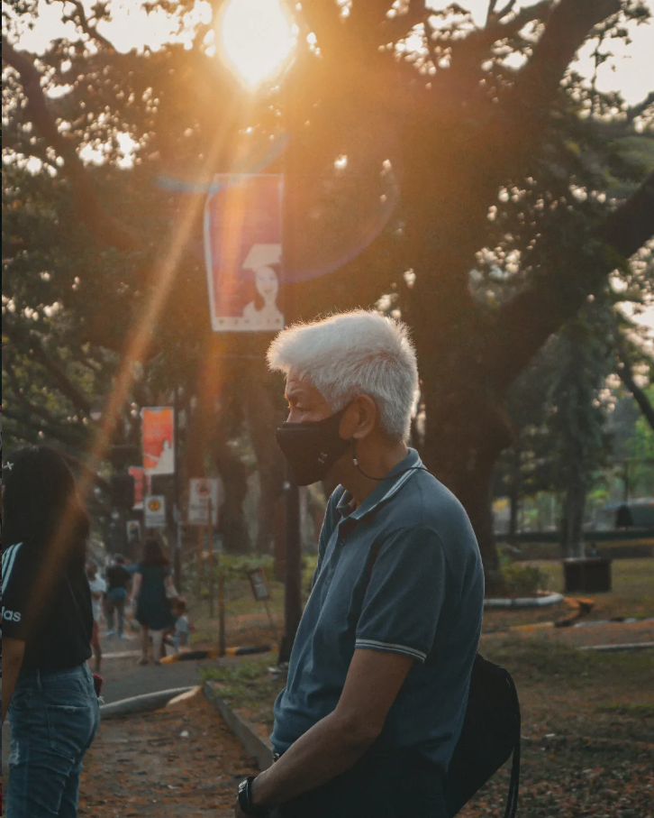
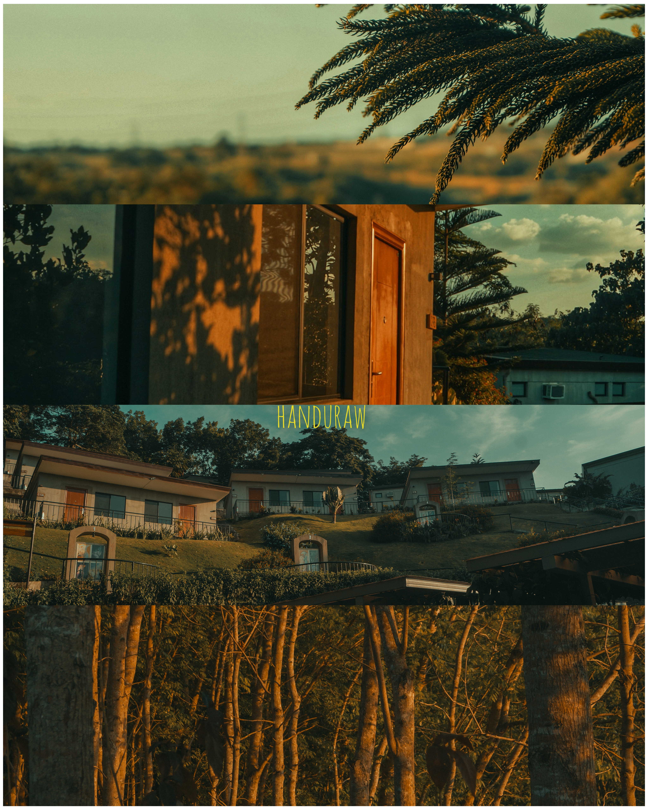
I am a passionate photographer dedicated to capturing raw emotion, dramatic lighting, and compelling stories. My journey behind the lens has always been driven by a fascination with how light shapes our world.
Alongside my creative pursuits in photography, I am also a Computer Science student. This duality of art and logic continually inspires me to explore new ways to present visual narratives, much like the creation of this very website.
Interested in my technical work?
Check out my CS PortfolioWhether you're looking for a portrait session, event coverage, or a collaborative project, I'd love to hear from you.